Olá! Sou Taci Guiotto, uma entusiasta nata da tecnologia apaixonada por explorar as possibilidades do mundo digital.
Empresaria, esrategista digital, gestora de trafego, e atualmente, estou cursando Engenharia de Software, onde mergulho profundamente do meu aprendizado e evolução.
Com uma base sólida, trago uma perspectiva única para o mundo do marketing digital. Combinando meu conhecimento técnico com minha experiência em estratégias online,
busco criar soluções inovadoras e eficazes para impulsionar marcas e negócios para o sucesso online.
Ao longo de todos esses anos de experiência em marketing digital, tive o privilégio de colaborar com uma variedade de empresas e empreendedores, ajudando-os a alcançar e
engajar seu público-alvo de maneira significativa. Minha abordagem centrada no cliente e orientada para resultados é moldada pela minha paixão pela tecnologia e pelo meu compromisso com a excelência.
Estou sempre em busca de novas oportunidades para aprender e crescer, aproveitando ao máximo minha jornada educacional em Engenharia de Software
para aprimorar minhas habilidades e oferecer resultados excepcionais para meus clientes.
Apaixonada por design e tecnologia, estou aqui para compartilhar minhas criações e ideias com você!
 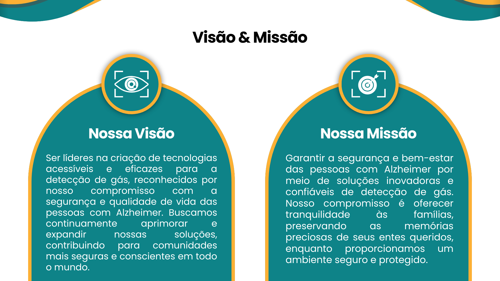
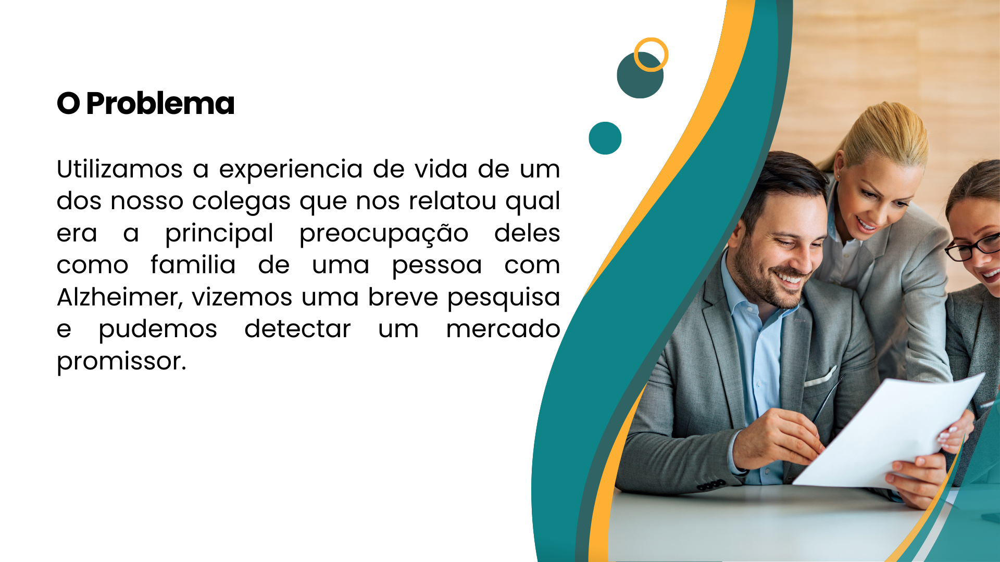
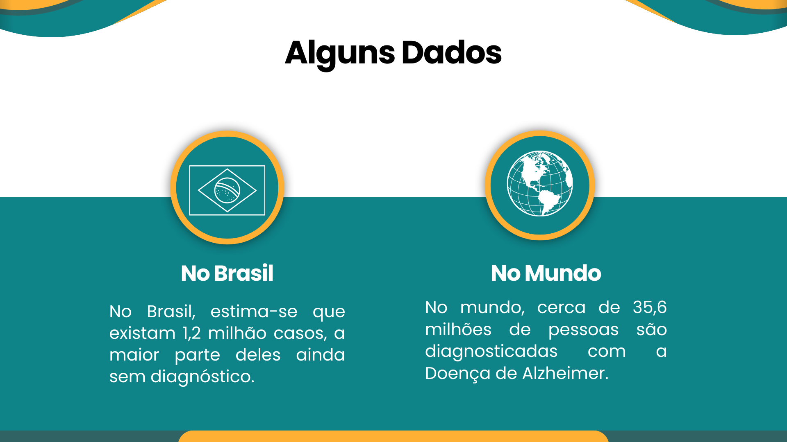
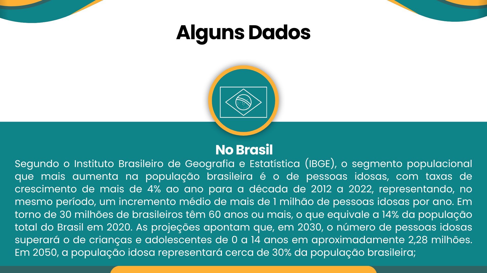
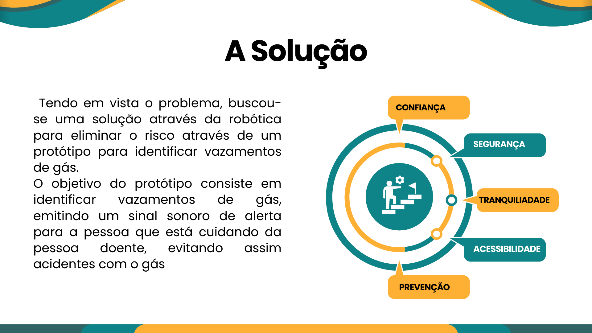
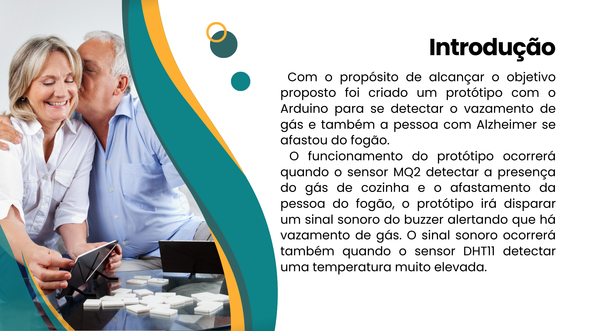
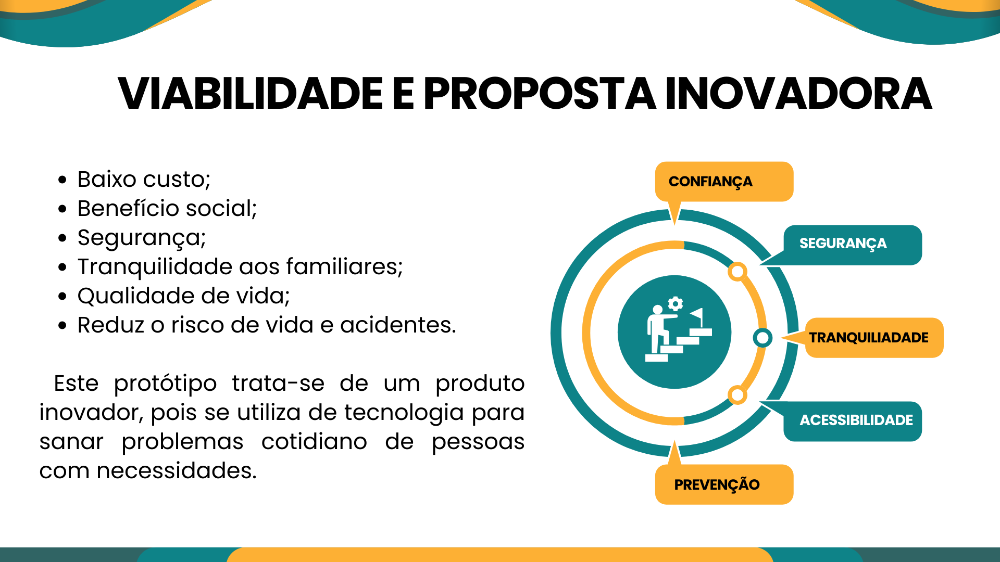
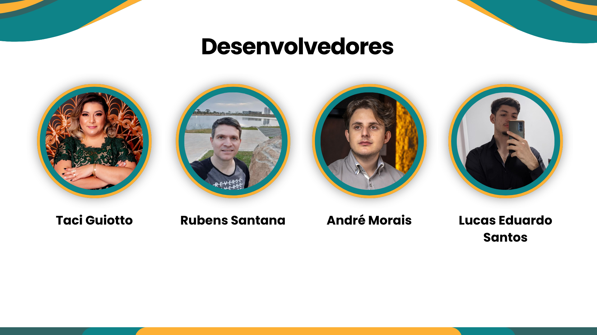
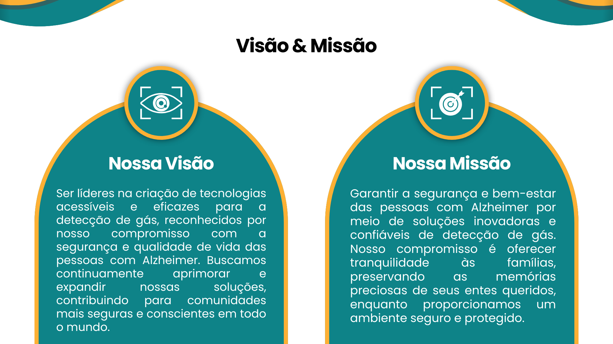
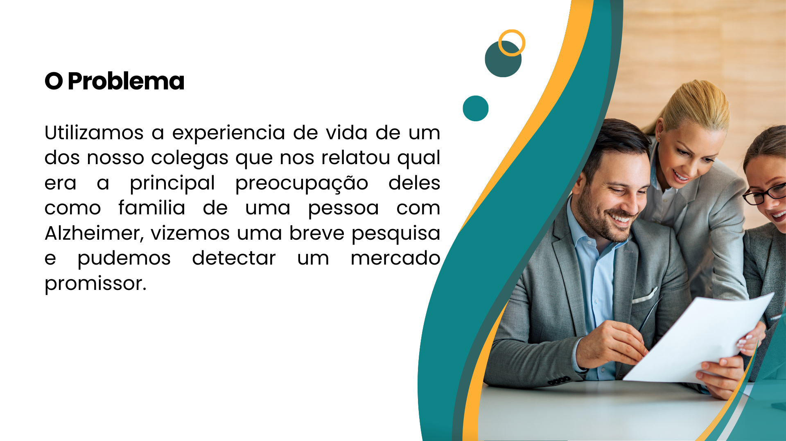
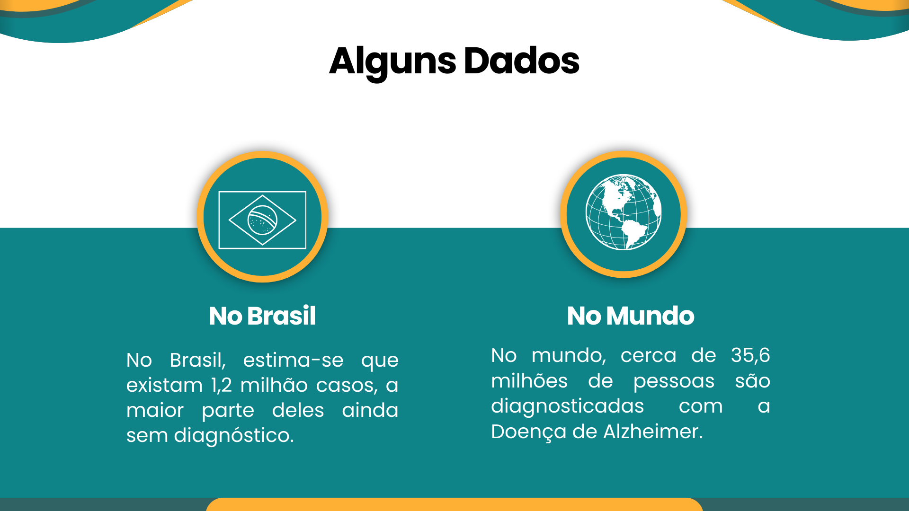
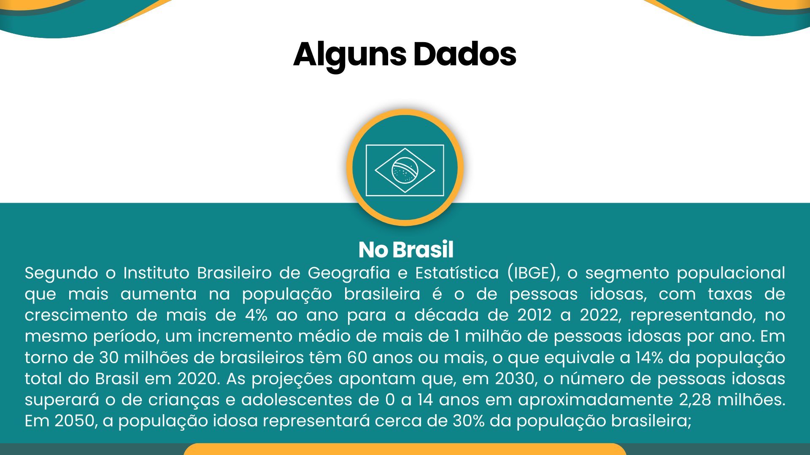
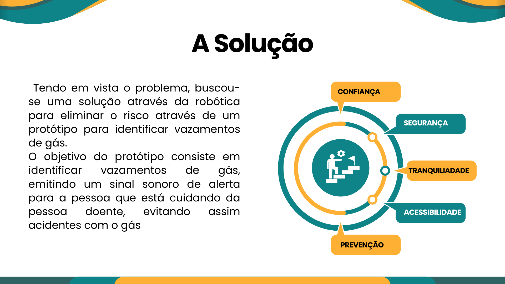
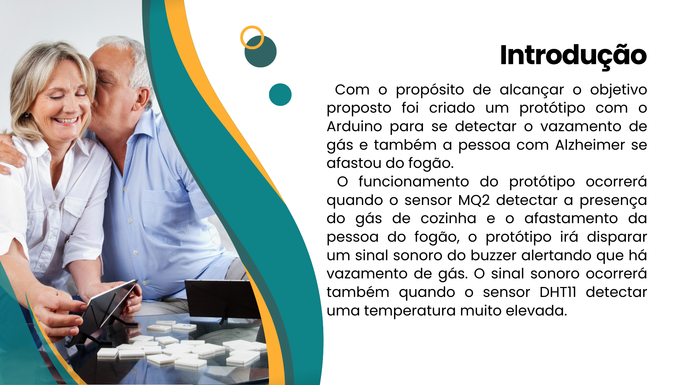
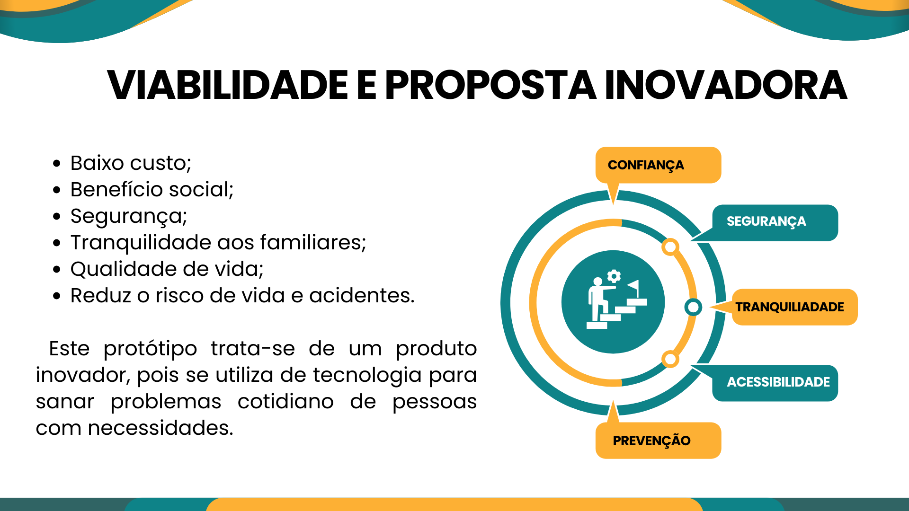
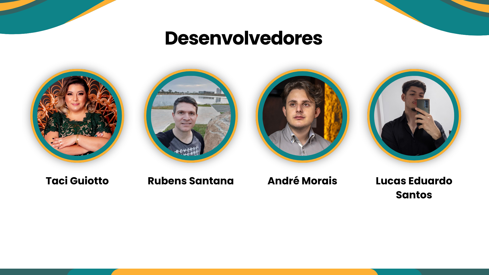